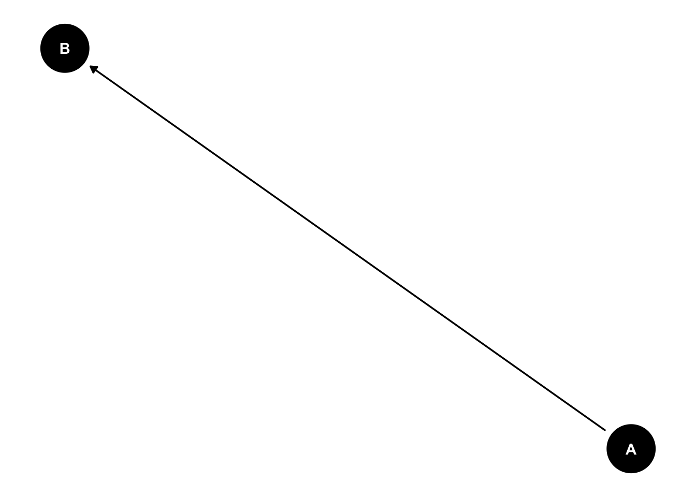
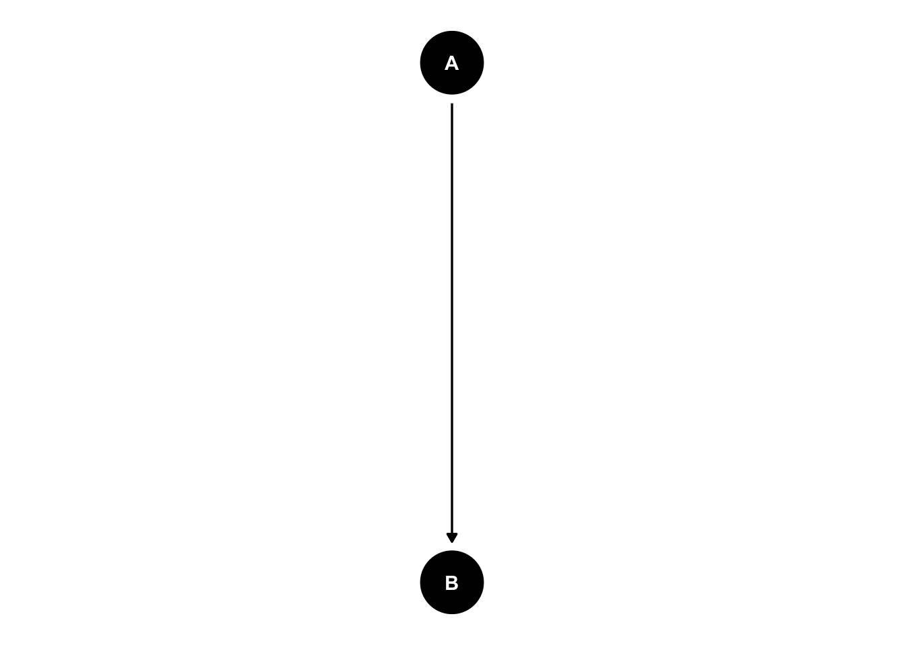
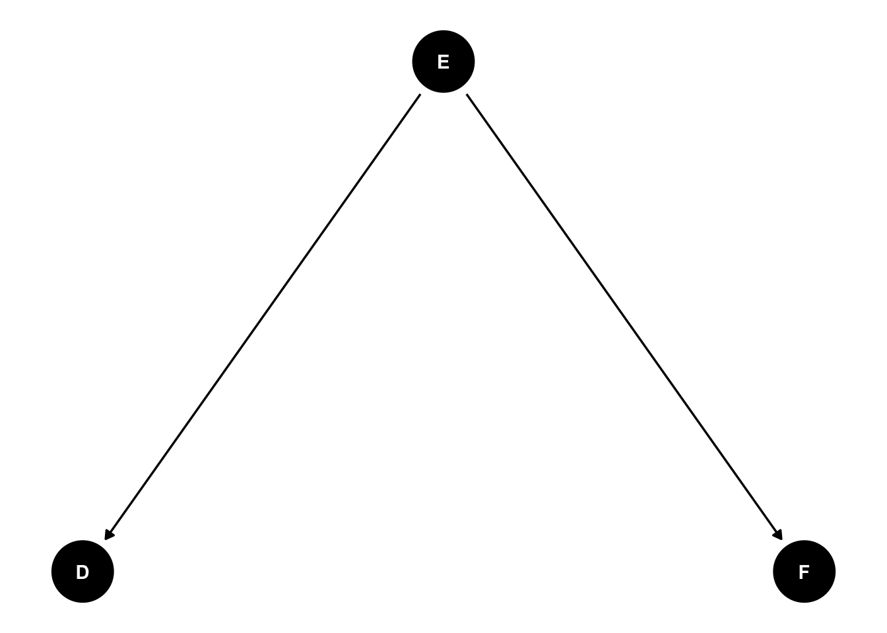
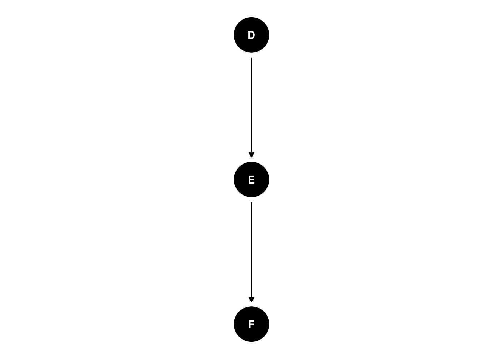
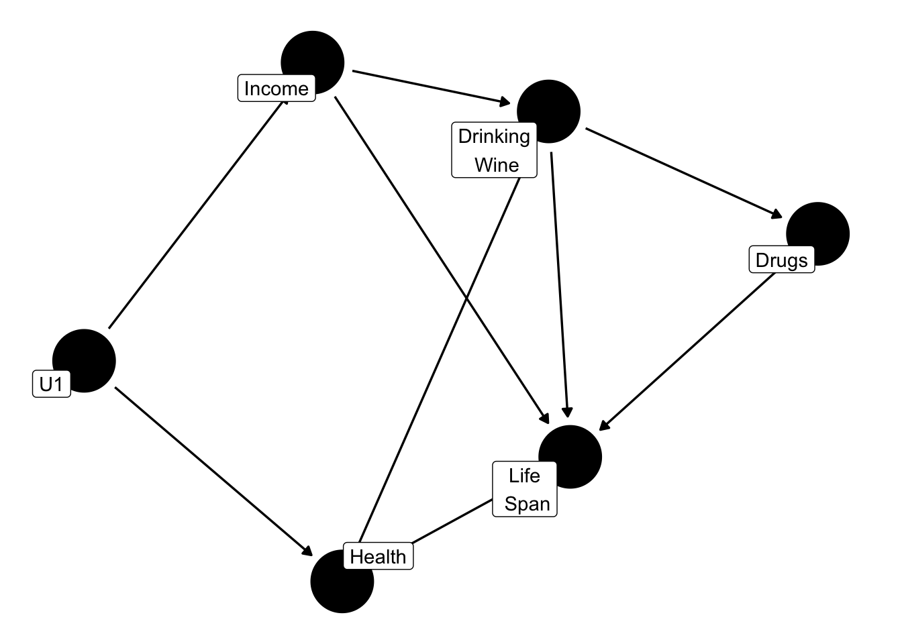
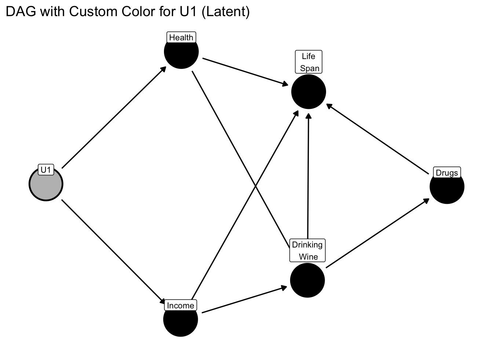
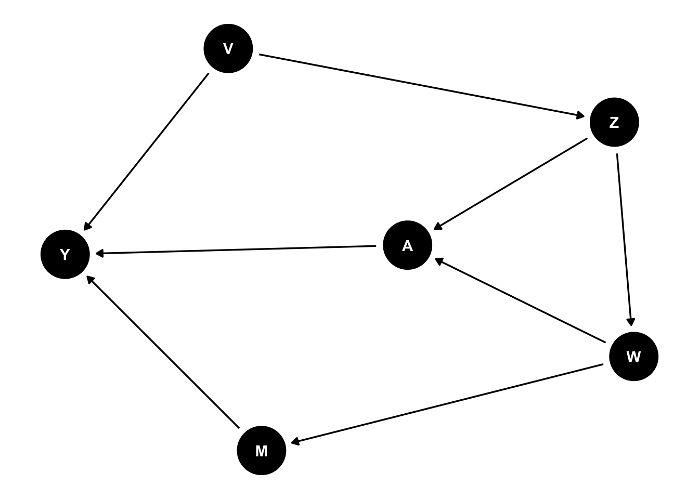
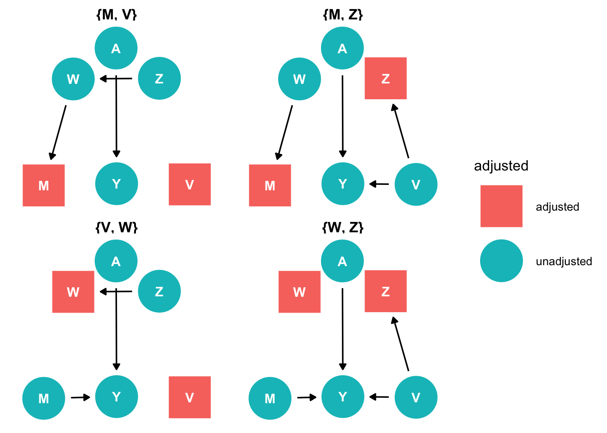
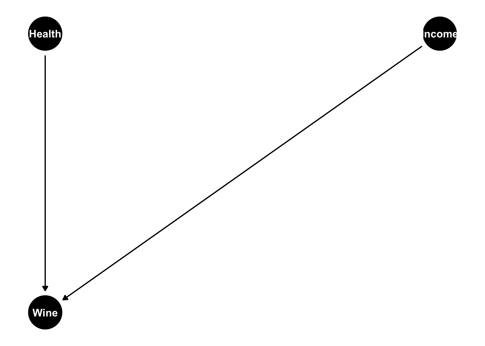
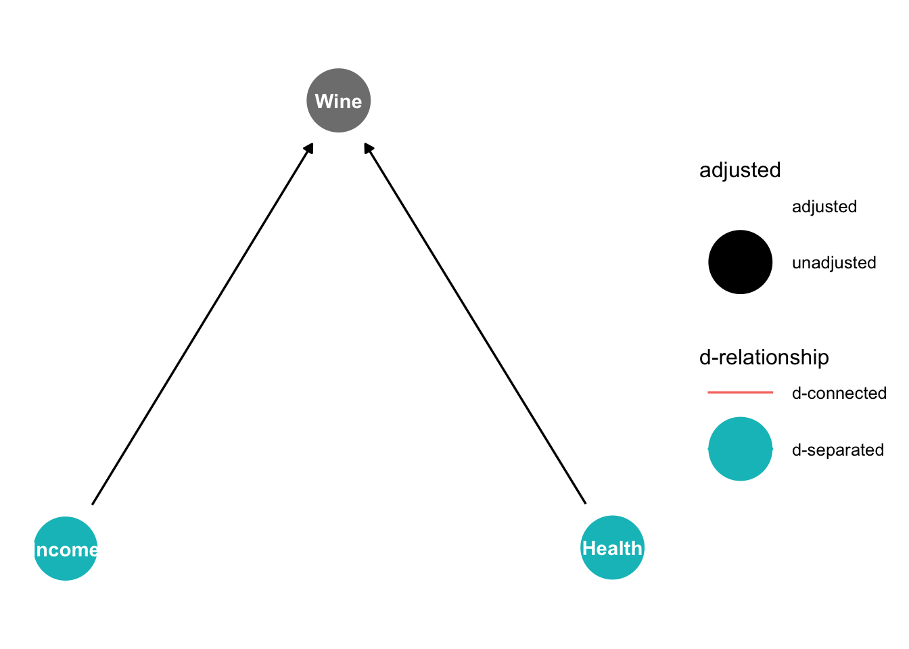

Directed Acyclic Graphs (DAGs) help us visualize causal relationships between variables. In this tutorial, you’ll learn about creating DAGs in R. By the end of this tutorial, you should be familiar with the following:
1. packages ggdag and dagitty
2. Create a simple DAG
3. Customize DAG with colors, and labels
4. Highlight causal paths, confounders, and colliders
Front-end Matters
In this tutorial, we will be using ggdag and dagitty packages to create and visualize DAGs in R. dagitty provides a framework for defining causal graphs, identifying adjustment sets, and testing causal assumptions, while ggdag makes it easy to plot and customize DAGs using ggplot2. More detailed information can be found on their official websites: ggdag;dagitty
The following object is masked from 'package:stats':
filter
library(dagitty)#We also need to load our old friend ggplot2library(ggplot2)#The function below sets a clean, minimalistic background specifically designed for DAG visualization, removing unnecessary grid lines and axes for better readability.theme_set(theme_dag())
Creating a Basic DAG
Let’s start from the most simple example: we have two nodes, A is the treatment and B is the outcome.
dag <-dagitty("dag{A -> B}")tidy_dagitty(dag)
# A DAG with 2 nodes and 1 edges
#
# A tibble: 2 × 8
name x y direction to xend yend circular
<chr> <dbl> <dbl> <fct> <chr> <dbl> <dbl> <lgl>
1 A 0 1 -> B 0 0 FALSE
2 B 0 0 <NA> <NA> NA NA FALSE
In this output, name shows the name of each node; x and y are automatically generated, representing the x- and y-coordinates for positioning nodes in a DAG; xend and yend represent the coordinates of the ending point of an edge; circular indicates whether the DAG layout is circular.
ggdag(dag, layout="circle")

#other layout options include "tree" and "stress"
Instead of the ->, we can use ~, a more R-like formula syntax through the dagify() function.
dagify(B ~ A) %>%ggdag()

We can add more nodes to DAG, and create the forks, chain, and inverted forks paths we introduced in the lecture.
Forks:
dagify(D ~ E, F ~ E)%>%ggdag(layout="tree")

Chain:
dagify(E ~ D, F ~ E)%>%ggdag()

Inverted Forks (Collider):
dagify(E ~ D, E ~ F)%>%ggdag(layout="tree")
A more complicated DAG
If we want to draw a more complicated DAG (like the wine -> lifespan one we see in the textbook), we don’t have to write down every single path. Instead, since lifespan is influenced by income, wine, health, and drugs, we can write these factors in one line of code. dagify() function also has options for declaring which variables are exposures, outcomes, or latent, as well as coordinates and labels for each node.
Let’s replicate the wine -> lifespan graph in the textbook.
winelife <-dagify( Lifespan ~ Health + Income + Wine + Drugs, Wine ~ Income + Health, Income ~ U1, Health ~ U1, Drugs ~ Wine,exposure ="Wine",outcome ="Lifespan",latent ="U1")ggdag(winelife,layout="stress")
Customize DAG
We can also customize the DAG by adding labels and changing the color/size of the nodes and texts.
winelife_label <-dagify( Lifespan ~ Health + Income + Wine + Drugs, Wine ~ Income + Health, Income ~ U1, Health ~ U1, Drugs ~ Wine,labels =c("Lifespan"="Life\n Span","Health"="Health","Income"="Income","Wine"="Drinking\n Wine","Drugs"="Drugs","U1"="U1" ),exposure ="Wine",outcome ="Lifespan",latent ="U1")ggdag(winelife_label,layout="stress", text=FALSE, use_labels="label")

In this DAG, U1 is a latent variable, meaning it is unobserved and omitted from our dataset. Since latent variables can introduce unmeasured confounding, it is often useful to highlight them visually in our causal diagram.
We can change the color of a specific node (U1) to make it stand out, helping us easily identify unobserved variables in our analysis.
We need to create tidy_dagitty() again since it converts the DAG into a tidy format, allowing us to manipulate node attributes (such as color, labels, and positions) before plotting. Without this step, ggdag() would not recognize custom aesthetics like assigning a different color to only one node.
dag_tidy <-tidy_dagitty(winelife_label)dag_tidy
# A DAG with 6 nodes and 9 edges
#
# Exposure: Wine
# Outcome: Lifespan
# Latent Variable: U1
#
# A tibble: 10 × 9
name x y direction to xend yend circular label
<chr> <dbl> <dbl> <fct> <chr> <dbl> <dbl> <lgl> <chr>
1 Drugs 1.66 -0.00406 -> Lifespan 0.521 0.366 FALSE "Drugs"
2 Health -0.524 0.522 -> Lifespan 0.521 0.366 FALSE "Health"
3 Health -0.524 0.522 -> Wine 0.511 -0.369 FALSE "Health"
4 Income -0.530 -0.521 -> Lifespan 0.521 0.366 FALSE "Income"
5 Income -0.530 -0.521 -> Wine 0.511 -0.369 FALSE "Income"
6 Lifespan 0.521 0.366 <NA> <NA> NA NA FALSE "Life\n…
7 U1 -1.64 0.00648 -> Health -0.524 0.522 FALSE "U1"
8 U1 -1.64 0.00648 -> Income -0.530 -0.521 FALSE "U1"
9 Wine 0.511 -0.369 -> Drugs 1.66 -0.00406 FALSE "Drinki…
10 Wine 0.511 -0.369 -> Lifespan 0.521 0.366 FALSE "Drinki…
Now we can create a new column to define node color.
ggdag(dag_tidy, layout ="stress", text =FALSE) +geom_dag_point(aes(fill =ifelse(name=="U1","grey","black")), size =15, shape =21, stroke =0.001) +# Use 'fill' for colorgeom_dag_label(aes(label = label), color ="black", size =3, vjust =-0.8) +# vjust for label location#geom_dag_text(color = "black", size = 5) + to modify text color and size (not applicable here)scale_fill_identity() +ggtitle("DAG with Custom Color for U1 (Latent)")

Highlight causal paths, confounders, and colliders
Finding paths
ggdag_paths() identifies open paths between the exposure and outcome and classifies them as direct, backdoor, or other paths.
Earlier, we identified several paths between Wine and Lifespan, including backdoor paths through Income and Health. Once we decide which variables to adjust for, we can use the adjust_for argument to see how those paths change after conditioning on the selected variables. Here, we adjust for Income and Health to block the backdoor paths.
The ggdag_parents() function identifies and visualizes the parent nodes of a selected variable in a DAG. Identifying parent nodes can help identify potential backdoor paths if the selected node is the exposure in a DAG.
The backdoor criterion says that we have sufficient set of variables to control for confounding when it blocks all backdoor paths from treatment to the outcome, and when it does not include any descendants of treatment. Using ggdag_adjustment_set() function, we can quickly get the minimally sufficient adjustment sets to adjust for when analyzing the effect of x on y.
Let’s see another practice using the example on Lecture Slide page 23.
# First make the DAGPractice <-dagify( Y ~ V + A + M, A ~ Z + W, M ~ W, W ~ Z, Z ~ V,exposure ="A",outcome ="Y")ggdag(Practice, layout="stress")

ggdag_adjustment_set(Practice)

Controlling for collider?
In the lecture, we emphasized that we should never control/block a collider. Because doing so induces a fake correlation between its parent variables, even if they were originally independent.
To formally analyze whether variables are conditionally independent (d-separated) or conditionally related (d-connected) in a DAG, we can use the function ggdag_dseparated().
# First create a DAG with a colliderIncomeHealth <-dagify( Wine ~ Income + Health,exposure ="Income",outcome ="Health")ggdag(IncomeHealth, layout='tree')

ggdag_dseparated(IncomeHealth)

We see that Health and Income are d-separated, meaning they are independent. Let’s see what happens if we control for the collider.
Now we see after controlling the collider, Health and Income become d-connected, meaning we are creating a fake relationship between them.
We also need to be careful about controlling for a descendant of a collider. Even if we do not control for the collider itself, conditioning on one of its descendants can also open the path.
Income and Health are initially d-separated because Wine is a collider. However, after controlling for Selected, a descendant of Wine, Income and Health become d-connected. Therefore, when identifying variables to control for, we should avoid conditioning on colliders and their descendants.
Controlling for a mediator??
A mediator lies on the causal pathway between the exposure and the outcome. If we are interested in the total effect of the exposure on the outcome, controlling for the mediator blocks part of that causal effect.
Let’s see what happens when we control for the mediator in a simple DAG.
# First create a DAG with a mediatorwinedrug <-dagify( Lifespan ~ Drug, Drug ~ Wine,exposure ="Wine",outcome ="Lifespan")ggdag(winedrug, layout='stress')
In this tutorial, we explored how to visualize and analyze DAGs in R using the ggdag and dagitty packages. We learned how to build, customize, and interpret DAGs, identify open paths and sufficient adjustment sets, and highlight key variables such as confounders, mediators, and colliders. Understanding DAGs helps ensure proper causal inference by guiding which variables to adjust for in analysis.